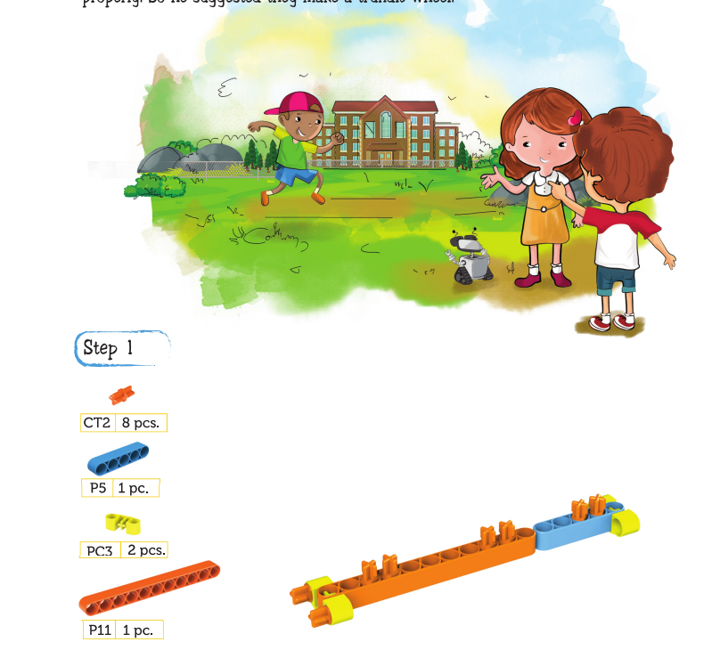
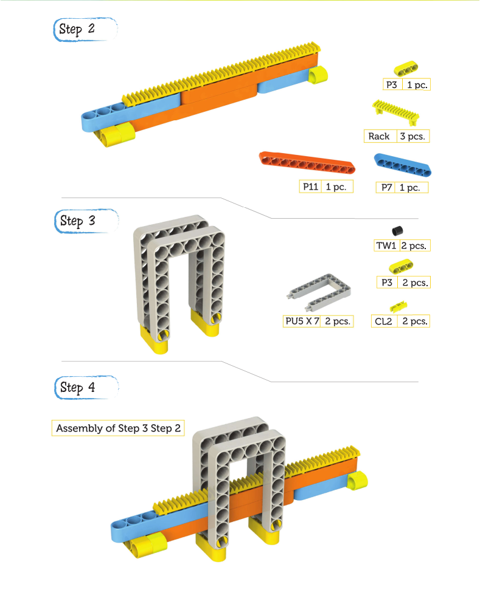
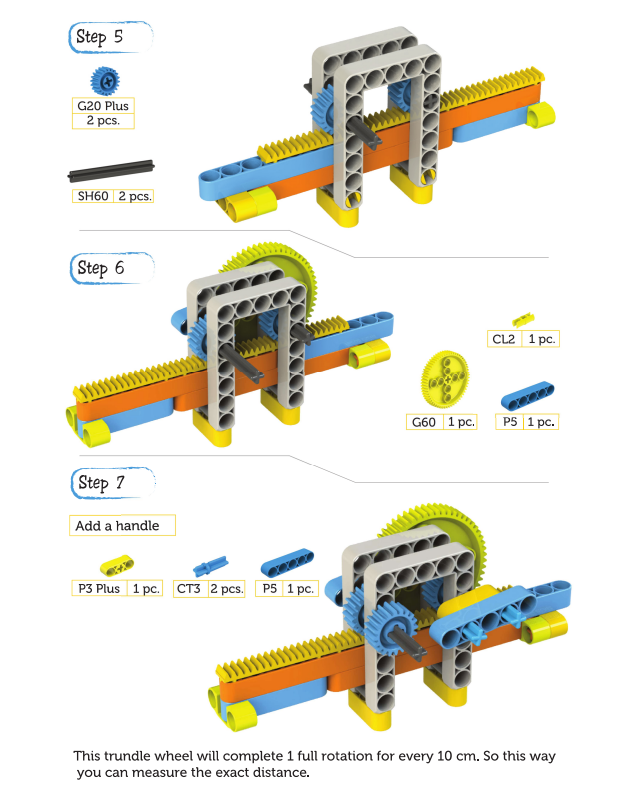

CHAPTER 16 - TRUNDLE WHEEL
Kit notices Jack, a villager in the park preparing for the school sports day. Their favorite sport is the long jump. Jack has just made a huge jump. He is all excited and wants to know how long his jump is.
Mia says that Jack's jump was 58 cm. But Jack feels that he has done much better.
Kit thought that they needed some sort of device that can measure a long jump properly. So he suggested they make a trundle wheel.


